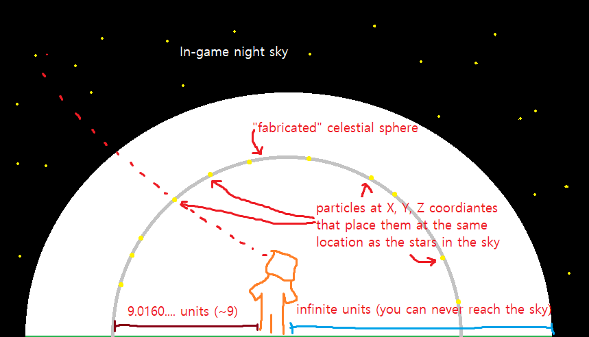
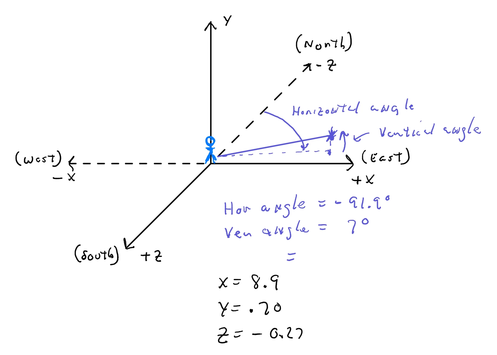

Hi! My name's Nina.
And I made a Minecraft datapack for my senior thesis.
Contrary to what my parents think, I haven't just been playing Minecraft for the last few months. I've been modifying it.
I wanted to tap in to the basic human tendency to look up at the stars. In a Minecraft world, which so clearly parallels the human experience, stars dot the night sky. But players have wondered for years: What do they mean?
Surprisingly, all stars in Minecraft are generated from the same seed. Meaning: all stars in every Minecraft world are generated from the same random number.
This got me thinking not only about my place in this universe, but the place of every Minecraft world and every Steve and Alex in every Minecraft world. What stories would the stars tell?
And so, I got to work making a datapack all about those pixels in the night sky. The final product is kind of like a side-quest for Minecraft-- it tells a story, but isn't absolutely necessary to complete the game.
You can learn more about my project or my process for this project.
The Project
An endeavour, to be sure.
What's a datapack?
A Minecraft Datapack is a way to program Minecraft that is supported by Minecraft; it's basically a collection of very simple lines of code that when put together can make more complex things happen. Datapacks are supported by Minecraft / Mojang in the fact that they do not require any other downloads other than the Datapack itself. Other common mods, like Forge mods, require a special client download since those mods are doing more intense changes to a Minecraft client itself (a "Minecraft client" is the thing that actually runs Minecraft on your computer; if it's unmodded, i.e. downloaded from Minecraft.net, it is considered a "vanilla" launcher). On the other hand, you can think of Datapacks as using the materials that are already in Minecraft to do cool things, instead of adding in brand new code and functionality to Minecraft, like Forge mods.
Datapacks are written in an arbitrary language (because why would they make it easy and do it in C++ or Java?), using the same language as in-game for blocks called Command Blocks. Command Blocks are exactly like block-coding (like Scratch), but instead of being in a 2D UI, the “blocks of code” are actual 3D Minecraft blocks. They can chain together, be conditional depending on each other, and cause things to happen in the Minecraft world like spawn items, blocks, and enemies; change the weather; or even send text in chat.
So a Datapack is basically a collection of a bunch of Command Block lines of code, with a bit more functionality than what Command Blocks can do. Unlike Command blocks, Datapacks can call other functions by name, save buildings / structures, create custom block groups for easy block references, and more. Through these simple mechanisms, Datapack developers can create more intricate Datapacks to do more interesting things, like adding vehicles, new animals, and decorations; seasons; space adventures; or even new biomes. No other installation other than downloading a folder and adding it to your Minecraft world is needed. This simple installation also makes it easy to add Datapacks to multiplayer worlds, so you can play most datapacks with your friends!
A few notes for coders out there:
- All variables are public in a Datapack
- All variables must be stored as Scoreboard values, meaning only integers (though you can divide them to get doubles / floats at the end of the process)
- Functions cannot take arguments
- There are no bracket if-statements (all if-statements are one line, so if there are multiple things that need to happen they either need to be put together in a separate function that executes on the if-statement, or multiples of the same if-statement)
- There are no while-loops or for-loops (must be done with a counter in a Scoreboard value)
- Each file is a different function, there are no classes or objects except for the entities / blocks in the game
How do Datapacks work?
At their most basic level, Datapacks are generally a network of .mcfunction files. These files are commonly called from the load.mcfunction and tick.mfcuntion files, which are designated functions that run once on Datapack load and every tick (respectively). Each .mcfunction file is its own function, and can be called from any other function in the Datapack at any time.
Functions can also be called manually in the game by typing /function [namespace]:[function address], for example:
/function astronomer:structuregeneration/observatory2/setchunk
That function is real function in my Datapack. The setchunk function there spawns in a structure (in this case, an observatory) into the game. Below is the entire function, so you can see what a .mcfunction file looks like. All lines are executable in Minecraft as well, just put a / in front of them to designate a command in chat.
#------
# OBSERVATORY SET CHUNK
# Actually sets the structure block in place
# and adds the doors and the chest with loot_table.
#------
setblock ~ ~ ~ air
setblock ~ ~ ~ minecraft:structure_block[mode=load]{name:"astronomer:observatory",rotation:"NONE",mirror:"NONE",mode:"LOAD",posX:0,posY:-10,posZ:0} keep
execute if block ~ ~ ~ minecraft:structure_block run setblock ~1 ~ ~ minecraft:redstone_block
execute as @e[name=observatorychest,limit=1] at @s run setblock ~ ~1 ~ minecraft:oak_slab[type="top"]
execute as @e[name=observatorychest,limit=1] at @s run setblock ~ ~ ~ minecraft:chest{LootTable:"astronomer:chests/observatory"}
kill @e[name=observatorychest]
setblock ~ ~ ~ air
setblock ~1 ~ ~ air
#Set the door (the door rotates, not the structure!)
execute positioned ~4 ~1 ~4 run function astronomer:structuregeneration/observatory2/setdoor
fill ~ ~8 ~ ~8 ~100 ~8 air
#------
# Print the location of the observatory in chat
# for debugging purposes
#------
#kill @e[type=area_effect_cloud,tag=setchunk]
#summon area_effect_cloud ~ ~ ~ {Tags:["setchunk"]}
#execute as @e[tag=setchunk,limit=1] store result score x coord run data get entity @s Pos[0]
#execute as @e[tag=setchunk,limit=1] store result score y coord run data get entity @s Pos[1]
#execute as @e[tag=setchunk,limit=1] store result score z coord run data get entity @s Pos[2]
#tellraw @a "Setting chunk..."
#tellraw @a ["",{"text":"Score is "},{"score":{"name":"x","objective":"coord"}}]
#tellraw @a ["",{"text":"Score is "},{"score":{"name":"y","objective":"coord"}}]
#tellraw @a ["",{"text":"Score is "},{"score":{"name":"z","objective":"coord"}}]
Interestingly, developers can work on Datapacks as they’re live in a Minecraft world. That is, you can open a Minecraft world with a Datapack enabled, change some code in that Datapack, and then all you need to type into chat is /reload and you’ll experience those Datapack changes immediately.
What does the Astronomer Datapack do?
In my Datapack, I added observatories that generate randomly as you explore the world and inside of them are loot chests with books. Those books build to a bigger mystery that’s solve-able by yourself, but through playtesting it’s clear that it’s way more fun with friends. You can see the model of the observatory structure to the right.
I wanted to keep the structure small, similar to other buildings that generate in Minecraft. I read many years ago now that villages were designed to be simple but versatile to inspire the player to build on the builds and make them look prettier, or however they wanted. Instead of imposing a specific aesthetic style on your Minecraft world, villages are just a small discovery that you can customize as you adventure through new lands. I kept that idea in mind when designing the observatory; I want players to recognize it as an observatory, or at least a unique structure they haven’t seen before in Minecraft with its strangely rounded roof, and feel inspired to build their own observatory nearby, or even move into it.
As for the plot of the Datapack, I won’t spoil much, but I will say that it’s best described as a “side quest” adventure (thank you Jordan). It won’t interfere with any quest for the End, and observatories shouldn’t generate on pre-generated structures like villages, though they could potentially generate on player-made structures. Just be sure to only use this Datapack on a new world if you’re concerned about your current structures.
The Datapack also isn't an “interactive narrative” as most people think of the word. There are no real “choices” for the player to make, but instead they’re investigating. It is completely linear, although the generation of different structures is random to hopefully make for good re-play-ability. Think about how the End of Minecraft is also completely linear; there’s no choice other than to kill the Ender Dragon.
How did you code the Datapack?
It took a lot of trial and error. See the Process page for the first part of the journey, but after I decided to make a Datapack, I had to start from scratch. I didn’t know anything about Datapacks, so I just started watching tutorials and reading the documentation. I had no idea what Scoreboard values were, or what .mcfunction files were, but through reading and watching and reading and watching, I eventually became familiar with the process enough so now I feel confident in my ability to make a Datapack and help others with theirs.
I also included some advice for Datapack developers at the bottom of the process page, so you can head over there as well.
Process
Just keep coding and coding and coding and...
Picking Minecraft
From the very beginning of the Fall 2020 semester, Minecraft was on my mind for my Thesis project. I always wanted to learn how to mod Minecraft, and I though the platform was in dire need of some more storytelling platforms, so I thought it would be a good fit. I made a list of things I was interested in working on a project on and this is what I came up with:
- Space / stars / constellations
- Minecraft
- Multiplayer? Quarantine-ready
- Coding
- Design
Other contending ideas included National Parks in Minecraft, Alternate Reality Games, User Experience writing class plan, and a paper analyzing storytelling in video games from both an IMM and English perspective. But in the end, I went with “adding constellations to Minecraft.”
The evolution
Now, the original title of “Minecraft: Mod the Stars” seems like quite a deviation from where the project is today. With that name as a springboard, I started brainstorming what better stars and real constellations in Minecraft could look like, and how to implement them. I came up with the idea of adding constellations into the sky in Minecraft to act like they do in real life, as a way to navigate the world. As any Minecrafter will tell you, it’s incredibly easy to get lost when you go adventuring, so I wanted to add a vanilla (unmodified) way to get your bearings; I wanted players to learn how to use the stars to navigate and hopefully sparks some real-world interest in astronomy by doing so.
Once I knew I wanted to edit the sky in Minecraft to display stars, I had a lead. I learned all I could about how stars work in Minecraft and how the sky is rendered and found out that the stars are rendered client-side. That means that if I wanted to change the sky in any way, I’d have to do so by changing the client. I could change the client by making a Fabric mod, so I started setting up that development environment and doing a few tutorials. I had no experience with any kind of modding at all, so for the first few months of the Thesis process, it was pure research into how and why Minecraft works, and how to mod.
Then, sometime after Thanksgiving, I hit a solid brick wall in terms of research. I couldn’t find anyone who had done something similar to my project in a modern version of Minecraft (1.15+). I asked forums and Discord servers if anyone knew how to mod the sky in Minecraft, and I got no response. I searched up previous mods, and the closest I could find was the Astral Sorcery mod, which has multiple developers over many years working to make a significantly complex mod. I just wanted to change the sky, but Astral Sorcery adds constellations and so much more. So I felt very deterred from making a mod, not only because there was little to no info on it, but because the modding community also felt stagnant. I couldn’t find many tutorial videos on how to make mods, just videos on how cool mods are. There were even less beginner’s videos for modding. It almost felt like people making mods must have been doing it for years already, and thus it was an uphill battle to learn how to do it from square one. Modding also required knowing a lot of jargon and computer science concepts, especially a strong foundation in object-oriented programming (OOP). And while I’m comfortable with OOP, I was totally out of my element reading “someone else’s code” while modding. I read so much source code for different mods and documentation for Minecraft and mods that I eventually felt burnt out.
I do want to give a distinct shout-out to Technovision, whose videos were really accessible and easy to follow-- but unfortunately stopped a bit short of what I was trying to do (they mainly focus on creating new items, etc.).
Then I ran across videos about Datapacks, and thought about pivoting my project…
How we got to today
After running out of inspiration from modding, I was scared I wouldn’t have a thesis project by the end of the spring semester. By this time, it was late December 2020, during winter break. I decided to watch a tutorial on how to make a Datapack and was incredibly surprised how easy it was. I looked up the documentation for it, and it was all laid out on the Minecraft wikipedia. Datapacks seemed like an easy solution to all my problems: easy to get started, no need for a special work environment, and quick to implement.
I got started immediately figuring out different solutions to display stars in the sky. The main shift that happened between a real mod and a Datapack is that I could no longer edit the actual code of Minecraft. So basically I was constrained to the “Real world” of Minecraft.
Below are some of the coding problems I solved in the process.
Projecting stars
I had the idea to “project” new stars in a Datapack instead of changing the stars like I would have done with a mod. Datapacks can summon particle effects, or the little dots that appear for certain effects like getting poisoned or firework effects. I figured I could project dots everywhere relatieve to the player to look like stars, since the player doesn’t have to know they’re just particles.
I also wanted to calculate where the stars should be. In Minecraft, it will actually tell you what your Horizontal and Vertical angles are. You can see this information in the same place you can see your coordinates in the world, on the "Debug" or F3 screen. In the “Facing:” information, it calculates your Hor and Vert angles automatically. So I wanted to be able to look somewhere in the sky and know where the particle should be in X Y Z values.
To do this, I do what I often do to solve problems: I made a spreadsheet. This sheet not only calculated the X Y Z values of particles based on Hor / Vert angles, but it also converted that into a line of code that I can easily copy / paste into my favorite code editor (which was Brackets, but has slowly turned into Visual Studio).
But what I really wanted to do with the spreadsheet was calculate the movement of the stars over time, just by measuring one location in the sky. I wanted to be able to input the location of a star at a specific time, and have a spreadsheet calculate its movement over time. If I could get the new angles over time, I could also calculate its X Y Z coordinates over time.
But that was more math than I originally signed up for. I wasn’t sure how to do all that celestial math, so Dr. Nakra suggested I reach out to New Jersey State Planetarium to see if they could help. And oh wow, did they help!
I had a full exchange with the technician at the Planetarium, and most interestingly, we shared diagrams to explain to each other our points of view on the project:
A diagram I drew depicting a Minecraft player looking at the sky with a dome overhead to represent the sky in the game and a second dome to represent where to project the stars, similar to Earth's celestial sphere.

A diagram the planetarium technician drew to illustrate the X Y Z axis in Minecraft and calculating the Horizontal and Vertical angles conversion to X, Y, Z coordinates.
Although this material didn’t make it into the final project, the readings Bill sent over were invaluable to my research about celestial math, and very interesting reads. It was also interesting to try and explain my idea to someone else over email, and I am very grateful Bill was willing to help out with such a weird request!
After playtesting, I decided to keep the particles stagnant because players were getting confused as to what they meant in the context of the Datapack. But my future Datapacks will definitely benefit from this background research.
Generating structures
To get buildings in the game, I needed to use Structure Blocks. These allowed me to “load in” structures I’ve built previously. A definite setback is that structures cannot be added to world-generation, meaning it’s much more difficult to “add” buildings to villages since villages are part of world generation. Though, Datapack developers are hopeful that functionality will be added in future Minecraft updates.
But for now, we have to “manually” load structures in. To do this, I followed Cloud Wolf's tutorial on generating custom structures. Basically, Minecraft is already broken into “chunks”, or 16X16 squares of blocks in the world. This is how Minecraft renders in the world, it renders in a certain amount of chunks depending on the player’s view distance. Chunks are also always entirely in one biome. So to generate structures in one set biome, they need to be loaded in on one chunk. Then all we need to do is make sure structures loaded in are around the player, and not on the player.
To check around the player, every time the player moves we check if theyre in a new chunk. And if they are, we check the blocks a certain radius ahead of them to see if the structure, depending on customized requirements, should be generated there. For the sake of clarity, let’s walk through the generation of observatories in my Astronomer Datapack.
Every time the player walks into a new chunk, the Datapack checks if there is a special block, called Bedrock, 32 blocks ahead of the player at level 6. Since bedrock does not normally generate at level 6 (normally it generates between levels 1-3), I use its existence or not as almost like a global variable to see whether or not the chunk has been checked yet for observatory generation. If there is bedrock there, the Datapack doesn’t go any further. If there isn’t bedrock there, then the Datapack goes into the structure generation logic.
Checking 32 blocks ahead, it changes the coordinates it’s checking to the corner of the chunk that block is in, then it selects the block that’s 200 blocks in the sky. By putting the block 200 blocks in the air, it then uses a recursive method to find the “surface”-- or the first time it hits a block that’s not air.
Then it tests if that surface block is far enough from villages, pyramids, and other structures; if it’s over 80 blocks up (i.e. on a mountain or hill); and if there’s enough flat ground in the area to safely build an observatory. If it passes all the tests, then it does the setchunk function which loads in the observatory right in the corner of the chunk.
I also added a setdoor function, so the door to the observatory is always accessible (or at least tries to be). It does this by testing each location where the door could be for valid-ness: basically, it makes sure the door isn’t covered by dirt or other blocks. Once it finds one suitable location for the door, it spawns in a door there and then breaks from the function so there’s only one door on the observatory in the correct spot.
All the logic described above makes sure observatories generate only high up on mountains, safely on the ground, with at least semi-accessible doors for players to find. Worst case, though, players can just climb into the observatory from the roof!
Randomizing locations
This was one of the last things I implemented into the Datapack, mainly because there’s no easy way to do a “randomized list”. Although there is a random number generator built in to Datapacks, there’s no way to save the value of that number generator in a meaningful way. So instead, I again followed a Cloud Wolf tutorial, titled "Simple Random Number Generator". That tutorial helped me add a linear congruential generator (LCG), which is basically a pseudo-random number generator that uses random Universal Unique Identifiers (UUIDs) of different entities as the “seed” for the random number generator.
I used the LCG to pick a number from a range (in my case 1 to 5), and correlated those numbers to hard-coded locations in the world. Although there’s no way to save an array in a Datapack, I just wrote the values down in some comments to keep them consistent.
Basically, the books in the observatories will lead players to a certain location in the Minecraft world. In order to improve re-play-ability, I wanted to randomize the location of where players had to go, but it couldn’t be completely random because I needed to save the location to then generate a structure specifically right there. So, the Datapack picks a number 1 thru 5, and once its picked it generates the structure at that given location. By randomly picking from a pre-set of 5 locations, the Datapacks has a bit more re-play-ability than if players always had to go to the exact same location every time.
Advice for Datapack developers
Datapacks are a really easy way for anyone to get coding experience, as well as participate in the Minecraft Datapack community. There are always cool Datapacks coming out, and really interesting questions being asked in the subreddit r/MinecraftCommands. Developers are really pushing the limits of what’s possible with such simple commands, with some Datapacks reaching thousands of lines of code.
If you’re just getting started, I would say to just start with simple tutorials. It’s very frustrating at the beginning because you might want to start doing more complicated stuff right away, but if you don’t know what your lines of code mean, then you’ll have an even worse time.
So you should start getting to know the different parts of a command, for example:
execute as @a[distance=..2] at @s if block ~ ~-1 ~ diamond_block run tellraw @s “You’re on diamond!”
Once you get to know the Datapack “langauge” you can break down functions in to blocks, like this:
execute as @a[distance=..2] at @s if block ~ ~-1 ~ diamond_block run tellraw @s “You’re on diamond!”
Etc. etc. After a few simple tutorial videos, you should be able to ramp up pretty quickly to start working on the more complicated functionalities!
You should also have a clear vision of what you want your Datapack to do. The more you know about what you want to do before you start, the easier it will be to not only find solutions to the more difficult problems, but understand the constraints you're under or the compromises you can make. For example, it may make a big different whether you're working on a single player or multiplayer Datapack, or if you're determined not to add any extra blocks to the world and instead use the blocks that already exist in Minecraft, etc.
Advice for thesis students
Wow, ok, first of all, thanks for scrolling this far. And now for some real golden nuggets:
- Everyone changes their project in some way between December and February. Literally everyone. Some people change more than others, like a complete move away from their original project, and others do small pivots like I did, staying in Minecraft but doing a different kind of modification. Whatever it is, know that's it's standard procedure to change your project before / during the Spring semester. You aren't the first, and you won't be the last.
- Pick something you genuinely care about. Thesis projects are generally regarded as a great thing to add to your resume, so in that vein make sure you'd be excited to talk about your project during an interview! And make sure it's something you'll be interested in for at least a few months (since most people change in the Spring anyway)!
- This isn't the only project you'll ever do, and it's not the last one either. Some people put a lot of emphasis on thesis, and that builds up over the school year and especially in the Spring semester. I'd recommend not putting that kind of pressure on yourself if you can help it. Yes, thesis is commonly a project students put on their resumes, but it shouldn't be something you work so hard on that you end up never wanting to talk about it again. Use thesis to practice a good work-life balance :)
- As for work-life balance, I made it a point in the Spring semester to never work on Thesis on the weekend. I could do any other homework, but I only worked on Thesis during the week. By regulating my time like that, I started to build good habits of "turing off my computer" aruond 6 or 7 at night and promising not to turn it back on until the next day (with a few late-night exceptions). But I also got to spend my last few weekends in college doing things that weren't work, which was nice!
Wrap it up!
In the end, I'm happy that I worked on a project that interested me. I've wanted to work on Minecraft for a while now, and I'm happy I got to dedicate some time to it, to really learn how it works. I also got to problem solve, which helped me practice breaking down coding issues into simpler parts to then solve further. Thanks for reading this far, and I hope you enjoy my datapack!
Contact me!
Thanks for stopping by.
You can email me at: navazin1 (at) tcnj (dot) edu.